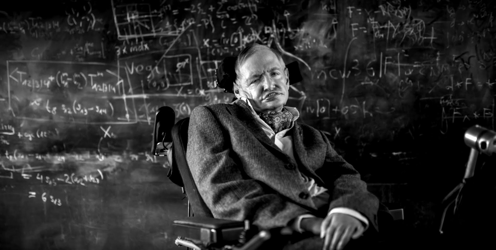
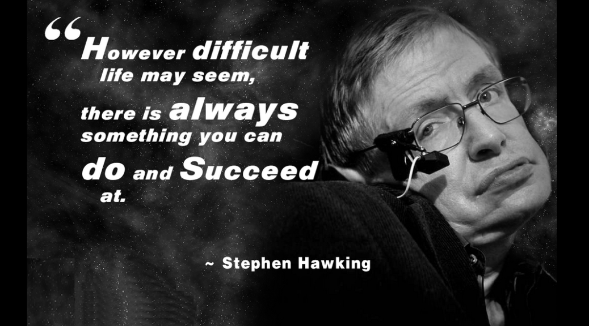

Stephen Hawking is awesome.
Stephen Hawking was one of the greatest theoretical physicists and cosmologists of the later half of the twentieth century till present times. We just lost him. The world will miss a brilliant theoretician, a great popularizer of physics, cosmology, and an indomitable spirit when it comes to unsurpassed intellectual trajectory despite huge adversity stemming from motor neuron disease. There is just simply no other example of such an unique life, where he did not allow his total disability to discourage him in the pursuit of science and knowledge ! Simply astonishing he will always be… Before I write about his great contributions to science I must mention that he was the 'Lucasian Professor' of Mathematics in Cambridge since 1974 when he stepped into Newton's shoes. The ceremony was accidentally witnessed by another famous scientist, Carl Sagan, who was visiting England at that time, and walked into an auditorium in Cambridge not realizing first what was going on there ! Professor Sagan nicely described the historic event in the world of mathematics in his great book on science, namely, 'Broca's brain'(1974). Professor Stephen Hawking's contributions in cosmology, astrophysics, in the deep understanding of the nature of black holes, phenomena associated with black holes, quantum gravity, attempts to unify the twin towers of physics, namely, relativity and quantum mechanics, key aspects of the superstring theory(the theory of everything) are enormous. He is one of the first to realize that the traditional view of black holes as entities from which light and EM waves could not escape, needed to be revised based on the results he was getting from his calculations, which arose from quantum mechanical principles as applied to general relativity in the development of the theory of black holes, and their evolution and fate. He was a pioneer in this along with Beckenstein, and Zeldovich.

This was one of the first attempts to unify quantum mechanics and general relativity through the applications of both fields in the understanding of black holes… It led him to conclude that black holes emit radiation, EM waves from quantum scattering effects in the event horizon. The event horizon is the boundary beyond which nothing can escape from the interior of the black hole, strictly speaking. The emitted EM waves and radiation are not in the visible spectrum, and hence can not be visualized. He showed that this was a major way that black holes could loose energy though slowly, with mass, or particles converting to energy following Einstein's universal mass-energy relationship… It could lead to a form of "evaporation" phenomenon of black holes, more so for the smaller sized black holes, stellar black holes, where these entities would slowly lose mass/energy through emission of EM waves/radiation. This phenomenon related to these singularities is named after Stephen Hawking, and the two other scientists named above. It is called the Hawking-Zeldovich radiation, or the Hawking-Beckenstein radiation, or just Hawking radiation. One of the amazing thoughts he entertained in figuring out that black holes must emit radiation, is what might have happened in the early universe… The thought was highly original and revolutionary. He thought what if all the atoms that came to be were actually like highly miniature black holes with the nuclei acting as the dense cores, or singularities, and electrons as matter or energy around the dense cores not able to exit out, in an 'event-horizon-like' state, then just as atomic orbitals radiate energy, EM waves, the black holes should be able to do the same !! It was a brilliant empiric comparison between two highly varied physical phenomena relating the world of the ultra-small, to the world of the very large and massive entities. He thought of this in his early university years when he was in his late teens. Professor Hawking was given the Fundamental physics prize in 2012 for his outstanding and deep contributions to the understanding of black holes, cosmology, quantum gravity, and quantum state of the the early universe. He was offered the knighthood by the Queen of England which he declined. One of Stephen Hawking's extraordinary ability was how he could rapidly visualize the final solution of a complex problem without going through intermediate steps discretely, or any necessary experiments. He could do it in his head, a cerebral experience that partly became second nature to him with his gradual physical shut down… He was a genius of which there is no doubt, one of the greatest theoretical physicists, and cosmologists of the present times. He was a fearless thinker, and one who could bring highly complicated scientific concepts to the masses. Generations of bright young students took up physics and mathematics because of his great influence. He brought science to the people through remarkably popular books such as the runaway bestseller 'A brief history of time'. Interestingly his genius was not evident in school, till he got to the university and started getting into more mathematics, physics, and astrophysics/cosmology. He will be remembered as the most remarkable scientist of great genius and limitless mental strength to rise above the greatest degree of bodily adversity to become emblematic of the unflinching power of the mind… No he did not die, he became a greater part of the cosmos… He will always be there… Kaiser T, MD.

Sean Nee, Writer